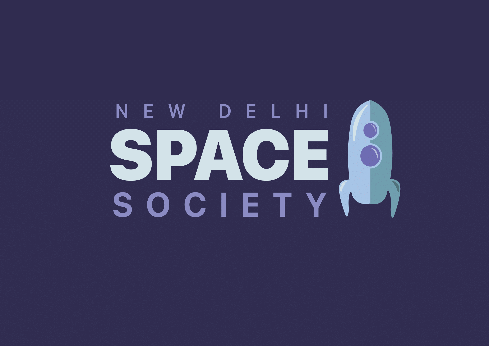

History
The New Delhi Space Society is a non-profit organization and functions as a chapter of the National Space Society. It was founded in 2018, seeing the level of enthusiasm in New Delhi students about space exploration and a lack of resources for this enthusiasm. We aim to make Space an accessible resource for everyone.
We intend to do so by utilizing our outreach programs and by inculcating awareness about various space-related mysteries and information. This shall pique the curiosity of many-a-students and make the vastness of space more valuable in everyone’s eyes. We share the same mission as the NSS, that is, “to promote social, economic, technological, and political change in order to expand civilization beyond Earth, to settle space and to use the resulting resources to build a hopeful and prosperous future for humanity.”
We intend to do so by utilizing our outreach programs and by inculcating awareness about various space-related mysteries and information. This shall pique the curiosity of many-a-students and make the vastness of space more valuable in everyone’s eyes. We share the same mission as the NSS, that is, “to promote social, economic, technological, and political change in order to expand civilization beyond Earth, to settle space and to use the resulting resources to build a hopeful and prosperous future for humanity.”
What principles do we follow?
©️ NASA's James Webb Space Telescope
Our motive is to spread awareness about the possibilities of space science and aerospace engineering. We believe that together, we can bring about a difference in society as well as the future of our species through space science. We also strive to act as a bridge between the scientific breakthroughs that take place in the field of aerospace and space science, as well as research about scientific mysteries ourselves.
We believe in the Latin phrase “Ad Astra”, as it is our hope that one day humans can successfully work their way through space, navigating and inhabiting stars as well as accomplishing breakthroughs that were once merely dreams.
We believe in the Latin phrase “Ad Astra”, as it is our hope that one day humans can successfully work their way through space, navigating and inhabiting stars as well as accomplishing breakthroughs that were once merely dreams.
Badge icon used on homepage by visual language from the Noun Project